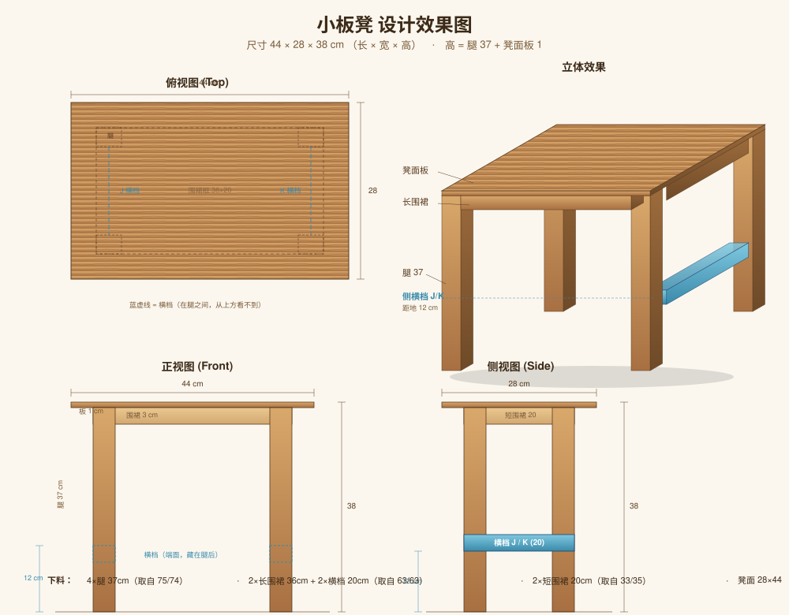

Ch.2 设计方案
立体效果图、三视图与设计参数

图 2.1 · 立体效果 + 俯视/正视/侧视三视图
整体参数
| 长 | 44 cm（取自凳面板长度） |
|---|---|
| 宽 | 28 cm（取自凳面板宽度） |
| 高 | 38 cm（腿 35 + 围裙 3） |
| 风格 | 传统四腿小板凳，简洁实用 |
结构分解
| 部位 | 数量 | 取材 |
|---|---|---|
| 凳面板 | 1 | 现成 28×44×1 板 |
| 腿 | 4 | 75 / 74 cm 木条对半切 |
| 长围裙（板下框长边） | 2 | 两根 63 cm 木条裁切 |
| 短围裙（板下框短边） | 2 | 33 / 35 cm 木条裁切 |
设计要点
- 凳面板四周悬出围裙框各 4 cm，前后左右完全对称
- 围裙框做在腿的内侧，从外面看不到接缝
- 所有部件保持木条原始截面 4 × 3 cm，无需精细木工
"为什么是 38 cm 高？" — 小板凳的舒适坐高约 30~40 cm，38 cm 略偏高、坐姿更直，也方便临时当矮凳子用。